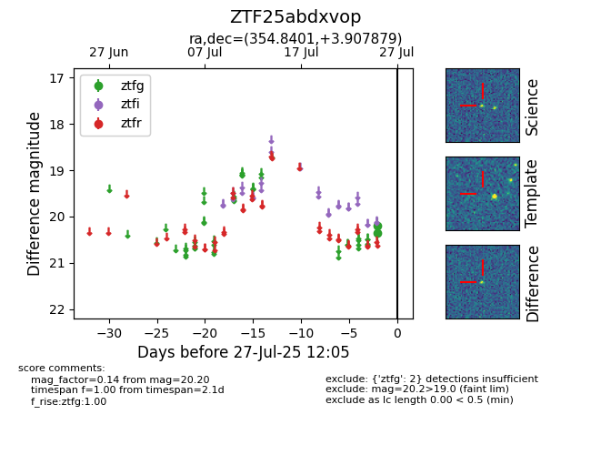

Target ZTF25abdxvop at 2025-07-27 12:05, see:
FINK: fink-portal.org/ZTF25abdxvop
Lasair: lasair-ztf.lsst.ac.uk/objects/ZTF25abdxvop
ALeRCE: alerce.online/object/ZTF25abdxvop
alt names
ZTF25abdxvop (ztf,fink)
coordinates:
equatorial (ra, dec) = (354.8401,+3.90788)
galactic (l, b) = (90.8991,-54.41879)
photometry
last ztfg=20.20
2 ztfg detections
